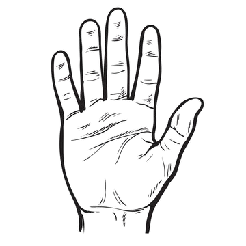

Hand Scanner (Web)
Click “Start camera”, allow camera access, then align your hand inside the on-screen template. When your hand fits inside, the video will play.

Start camera
Tip: If you see nothing, your browser might have blocked the camera.